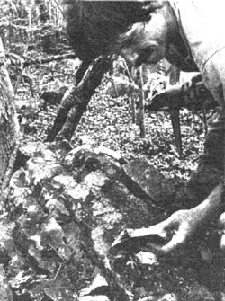

The Whetstone Quarry
Here's a small sample from Roy Underhill's new book, The Woodwright's Companion.
By the Mother Earth News editors
March/April 1983
Excerpted from The Woodwright's Companion: Exploring Traditional Woodcraft by Roy Underhill. Copyright© 1983 by The University of North Carolina Press. Reprinted by permission of the publisher.
Roy Underhill is familiar to many television viewers as "The Woodwright" . . . a down-to-earth fellow, distinguished by a pair of snappy red suspenders, who-once a week-departs the big city, saunters down a bustling highway, strolls across a traintrestle, and unlocks the door to his nineteenth century carpenter's shop (see opposite page). For the next 30 minutes, Roy invites viewers to share his knowledge of hand-tool woodworking ... or to learn-as Roy puts it-"how to start with a tree and an axe and make one thing after another until you have a house and everything in it".
In real life-that is, aside from being the host of the Emmy A wardnominated television series, The Woodwright's Shop, which is broadcast nationwide by PBS-Underhill is the master housewright at Virginia's Colonial Williamsburg, and author of two books, both of which complement his television series: The Woodwright's Shop and (this year) The Woodwright's Companion. MOTHER is happy to present a chapter from the latter, in which The Woodwright takes us on afield trip to a long-abandoned whetstone quarry near Chapel Hill, North Carolina.
Roy Underhill
We made our first serious attempt to locate the old whetstone quarry on a day so hot you'd break a sweat just buttering your cornbread. We made several stops along the road where it should have been, but no one we spoke to had seen anything that looked like a mine or quarry. One man said that he had encountered some deep holes off to the west while hunting, but our triangulations on a modern map placed the quarry to the east, so we decided to head on up the ridge and have a look about.
We walked up a cleared right-of-way through the trees, where horses had gone before. There were patches of poison ivy all about, and the occasional kamikaze deerfly went berserk in the presence of its first victim of the season. As we neared a second ridge, the deerflies broke off their attack, and I could see on the crest boulders about the size of bushel baskets that had been exposed in cutting through the narrow right-of-way.
The big rocks looked promising, but only slowly did the old workings begin to reveal themselves. I first spotted the remains of an old road intersecting the path. It was all but paved solid with angular, blue-gray stone rubble. We pushed through the arched brush over the old path, and immediately to our left we could see about quarter-acre of rubble of all sizes partially covered with leaf humus. The rock was fine and dark, and I went excitedly from rock to rock, handing them to Tom. "Try this one," I'd say. He would take it in his hand, test it between his fingers, and proclaim it "greasy," as though this were the highest level attainable in the mineral kingdom. We stopped our excavations long enough to make a quick foray down the old ridge road in either direction to assure ourselves that this was indeed the main workings. Apparently, this rubble pile on the ridge was it.
After an hour or so of picking and digging, we collected an armload each of smooth flat rocks and made our way back into town, busily honing our pocketknives as we went. We both ran out of spit well before the first mile, and the stones were thoroughly glazed.
Back at the shop I took one of the likelier-looking stones and began to dress it. After about ten minutes of rubbing on the side of a broken sandstone wheel kept constantly flushed with water, the surface shone like deep green marble. Giving the rock a splash of kerosene, I gave it a proper trial on a chisel. It was as good, a stone as I had ever used.
Of course my opinion is probably prejudiced by the adventure of having found the old quarry on the ridge, for this kind of rediscovery is one of my favorite events. Even if the stones had not been that good, they would have been priceless to me.
I decided to find out more about this quarry on the hill. For years it had been just an annoying enigma for me on the tattered 1891 map of the county that hung on the back wall of the shop. I asked several of the old families in the surrounding area if they had ever heard of the quarry. Finally, I found one woman who remembered her father's mentioning the old whetstone mine. She had never seen it, though, and I promised her that we would make a trip up there so that she could.
Finding only hints of information from the local people, I contacted the geology department at the local university. Only seven miles distant from the quarry and having had a school of mineralogy since 1820, it figured to have some records of it somewhere.
Within a few days a professor there had managed to locate a report published in the American Journal of Science for 1828 on the geology of North Carolina written by Dennis Olmstead, who was himself a professor of chemistry and mineralogy at the university. This report provided a gold mine of information.
"The most valuable bed that I have met with," he said, "is about seven miles west of Chapel-Hill. It is known by the name of M'Cauley's quarry. It has been opened on the summit of a hill, which forms one of three parallel ranges extending from north east to south west." This is exactly where we had been 160 years later. The overgrown ridge road passing by it was apparently well traveled then because he went on to say that "although many thousand hones have been taken from this spot by travelers and others, yet as the quarry has not been wrought for the market, the excavations have been carried to very little depth."
Olmstead found great variations in quality among stones obtained from the same spot, describing the best as having an olive green color and transparent edges. The best were apparently very good, as he goes on to say. "Our carpenters lay aside, for them, the best Turkey hones of the market.... Some of the specimens, when polished, present a clouded or chequered surface, with a high lustre, and possess no small degree of beauty. Mechanics, in the vicinity of the quarry, frequently supply themselves with masses of eight or ten pounds weight. One side being faced, it is used as a hone, and is generally valued in proportion to the time it has been in use, for thus it acquires smoothness and hardness. The quality is frequently much improved by becoming thoroughly soaked with oil."
So the stones were important and, according to my source at the university, about 600 million years old. They were probably formed from fine volcanic ash that settled in this spot when it was an archipelago in a primordial sea, as Indonesia is today. Heat and pressure slowly compressed the volcanic debris into the beds of "slate" that now cap this ridge in the woods.
BEGINNINGS
It wasn't long after we began to use rocks for tools that we noticed their abrasive qualities and put them to use for polishing first other stones and then the newfangled tools of bronze and iron.
A wide variety of natural materials have been used to grind and polish metal. The natural stones are usually known by the name of their source. Beyond the familiar Arkansas stone, there are the Turkey stone, the Belgian, the Labrador, the Naxian, the Tam O'Shanter, the Washita, the Charnley Forest, and the Water of Ayr, among countless others. The Arkansas and the Washita are among those known to mineralogists today as novaculites, from the Latin word novacula, meaning "a razor." Another good word is the Celtic name for whetstone, passernix.
Other materials have been used as well. Britons once sharpened their scythes on wooden "ripe sticks" covered with tallow and sand. Armorers polished metal with handfuls of "scouring rushes" or "horse tails," a plant which isolates silica in its cells. For stropping, leather, often charged with jewelers rouge (available at hardware stores as buffing compound), is the most commonly used material. I have occasionally used the undersides of woody shelf fungi that grow out of the sides of trees for this purpose.
The makers of artificial stones try to capture some of the romance of natural materials by giving them such names as the "India," but they are made of bonded synthetic abrasives such as silicon carbide. In his Dictionary of Tools, R.A. Salaman relates the story of a Brixton ironmonger who, when he could not convince carpenters of the value of the new artificial oilstones (this was in 1901), would throw one against the wall. As the stone would not break, he sometimes made the sale. These artificial stones have largely replaced the natural ones in today's market, except for the finest work.
The favored natural abrasive was, and is, about the most common material on earth: silicon dioxide, or silica-sand. Indeed, the root of the word sand goes back to the ancient Greek psen, meaning "to rub." Silica is hard and sharp when the grains are fresh. When rubbed about, though, the sharp edges become rounded and will no longer cut as well. Beach sand, which has been knocked about a lot, will not work as well as grit that is freshly eroded from the rock. In his report on McCauley's whetstones, Olmstead mentioned that one of their desirable qualities was that they "wear away fast." Using such a stone constantly reveals fresh surfaces of sharp particles. A stone that does not wear away faster than the metal that it is abrading will quickly glaze and stop cutting, either from the sharp edges having been rounded or from the particles of metal filling the spaces between the abrasive grains.
The oil for honing that Olmstead mentioned helps to prevent this last problem by holding the metal particles in suspension and keeping the grit clean. The suspended particles of grit also aid in polishing the edge. The water that is used on sandstones for grinding also washes away worn particles and softens the surface of the stone so that it will wear more readily.
Olmstead said that the McCauley stones will "set a fine edge" because "their grit is both fine and sharp." The size of the grit determines how finely the metal surface will be worked by contact with the stone. Abrasive stones work by scratching away the metal sur face. When you grind a chisel on a sandstone wheel, the large particles take deep, widely spaced scratches out of the surface. This quickly shapes the metal, but leaves the edge too rough and ragged to part the fibers of the wood cleanly. When you then hone this edge on a stone with smaller particles, the scratches produced are shallower and closer together. The result is a polished edge that is finer and keener, and one that will meet with less resistance as it is forced through the bundles of cellulose that we call wood.
The finest stones are those that have the smallest grain size and the least amount of foreign matter between the abrasive particles of the rock. The highly regarded Arkansas stones can be almost pure silica and appear pure white. Foreign matter colors stones and affects their cutting action by dispersing the actively abrasive grains so that the scratches they make are farther apart. These impurities can cause a great variation in how the stone will wear, faster or slower, and will determine in large part the tendency of the stone to glaze.
Carpenters generally prefer a soft, fast-wearing stone, both because it cuts quickly and because the broad blades of carpenter's tools will wear away the stone evenly across its surface. The best way to obtain a final edge on a soft or porous stone is to draw the blade backward across its face. I usually do this for a few strokes after I work the edge in a circular motion on the whole surface of the stone.
The narrow tools of carvers would quickly gouge out the soft stones that carpenters and joiners usually use. They must have as hard a stone as possible to resist irregular wear. The hard black Arkansas is their stone of choice.
CARE OF STONES
All whetstones need to be kept in a wooden box to protect them from breakage, dirt, and the elements. A stone that is exposed to the sun will harden and tend to glaze. Clean your stone with plenty of oil or water after each use and put it away. The wooden box will retain some of the oil or water and keep the stone fresh for its next use.
Protect the surface of the stone by working the tool being sharpened over the whole of its width, not just to one side. Inevitably, the ends of the stone will get to be higher than the middle. When this gets to be a nuisance, you can resurface the stone by rubbing it against another one (a chunk of sandstone is excellent) or on a sheet of abrasive paper set on a flat surface.
In many of the old towns of Europe the stone step of the stairway of a certain house was discovered incidentally to be a good whetstone. This spot would eventually become community property and be worn slowly away under countless kitchen knives. Chances are there is some worthy stone near you just waiting to go to work. If you cut your own trees, why not your own rock?
EDITOR'S NOTE: Copies of The Woodwright's Shop ($11.95) and Underhill's new publication, The Woodwright's Companion ($12.95), are available for their listed prices-plus 95 cents shipping and handling-from Mother's Bookshelf (restricted) , 105 Stoney Mountain Road, Hendersonville, North Carolina 28791. Roy Underhill will be back in MOTHER NO. 81 with another installment from The Woodwright's Companion ... in which he'll discuss hurdles, the portable fences used to enclose sheep and other small stock. You won't want to miss it!
|
BY THE AUTHOR AND MOTHER STAFF After finding a suitable chunk, Roy uses a hammer and chisel to split the stone along its natural cleavage. |
BY THE AUTHOR AND MOTHER STAFF Underhill examines a likely-looking outcrop of stone, searching for "pay rock". |
 BY THE AUTHOR AND MOTHER STAFF Exposing the flat face that |
|
BY THE AUTHOR AND MOTHER STAFF After being rubbed for about ten |
BY THE AUTHOR AND MOTHER STAFF A stone from the McCauley quarry, held up against the light, shows a translucent edge. |
 BY THE AUTHOR AND MOTHER STAFF A whetstone should be kept in a protective wooden box. This century-old white Arkansas stone, shown in its case, will put a mirror-finish edge on the tools it sharpens. |
|
|
|
|